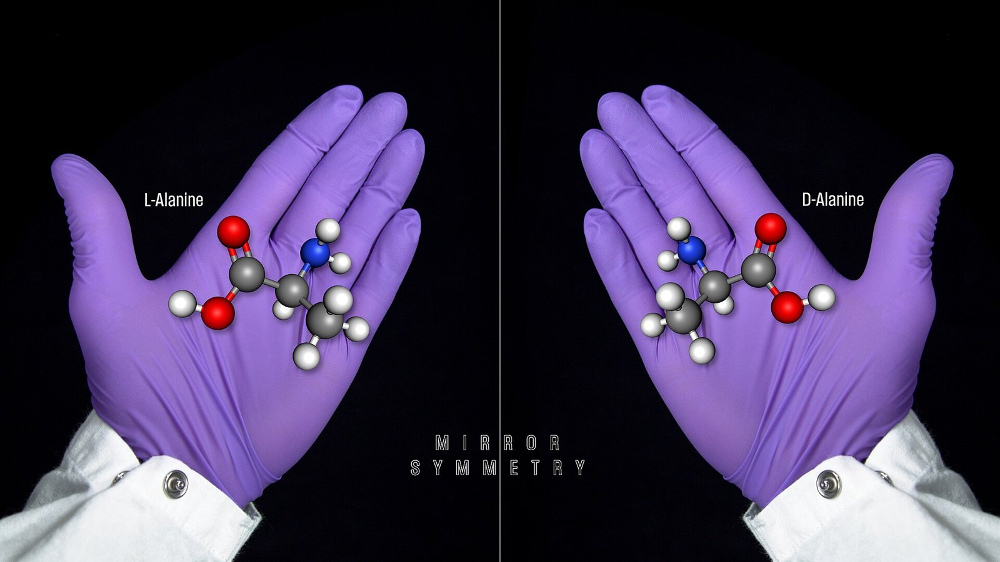
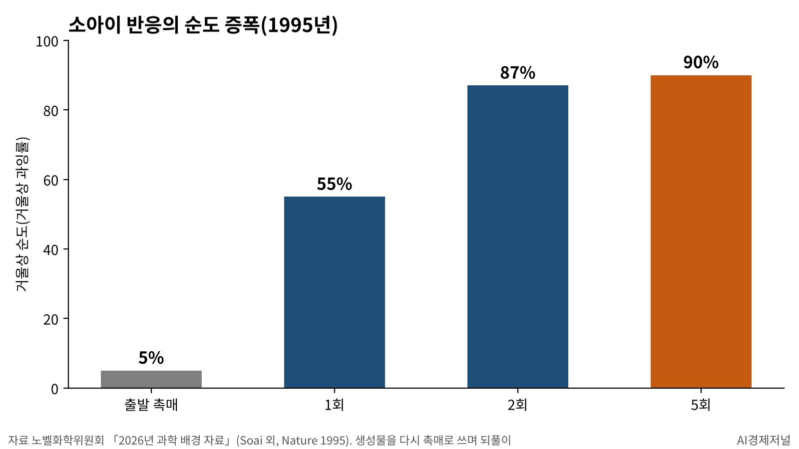
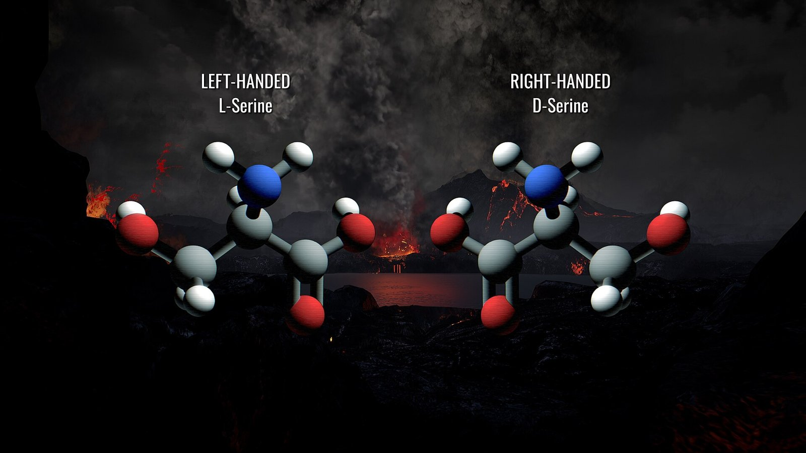

[노벨화학상] 거울상 분자의 쏠림을 키운 비선형 효과와 자기촉매
카강의 1986년 비선형 효과 발견
소아이 반응, 순도 5%를 90%로 증폭
의약품 합성 설계와 생명 기원 연구의 실험 근거
AI경제저널=김갑봉 기자 | 2026년 10월 7일 스웨덴 왕립과학원이 노벨화학상 수상자를 발표했다. 앙리 카강(Henri B. Kagan) 프랑스 옛 파리남부대 명예교수와 소아이 겐소(Kenso Soai) 일본 도쿄이과대 명예교수다.
공적은 「비대칭 유기합성에서 비선형 효과와 자기촉매 작용의 발견」이다. 카강은 1930년 프랑스 불로뉴비양쿠르, 소아이는 1950년 일본 히로시마에서 태어났다. 상금 1200만 크로나는 둘이 똑같이 나눈다.
생명은 왜 한쪽 거울상만 쓰나
아미노산 같은 분자는 오른손과 왼손처럼 서로 거울상인 두 형태로 있다. 그런데 생명체의 단백질에는 그 가운데 한쪽만 쓰인다. 화학자들은 이 성질을 그리스어 「같은 손」에서 따와 호모키랄성이라 부른다.
실험실은 달랐다. 왕립과학원은 두 거울상이 생길 수 있는 반응을 돌리면 시험관에는 언제나 두 형태가 같은 양으로 생겼다고 설명했다.
이 쏠림이 어떻게 생겼는지는 오랜 수수께끼였다.

의약품에서는 이 차이가 크다. 왕립과학원은 몸과 맞물리는 분자에서 한쪽 거울상만 원하는 효과를 낸다고 설명했다. 화학자들은 한쪽 형태만 골라 만드는 방법을 찾아왔다.
1953년 프랭크 모형, 세 가지 조건
1953년 영국 브리스톨대 이론물리학자 프레더릭 찰스 프랭크(F. C. Frank)는 아주 작은 쏠림이 한쪽 거울상만 남는 상태로 커지는 수학 모형을 냈다.
조건은 셋이다. 생성물이 제 생산을 돕는 자기촉매, 한쪽을 골라 만드는 비대칭 촉매, 반대쪽 거울상을 누르는 상호 억제다.
프랭크는 『비오키미카 에트 비오피지카 악타』에 실은 이 논문에서 실험실에서 보이는 일이 불가능하지는 않을 것이라고 적었다. 과학 배경 자료는 카강과 소아이 이전에는 상호 억제도, 자기촉매와 비대칭 촉매의 결합도 보고되지 않았다고 밝혔다.
1986년 카강, 촉매보다 순도 높은 생성물
1986년 전까지 화학자들은 생성물의 거울상 순도가 촉매 리간드의 순도에 정비례한다고 받아들였다. 카강 연구진은 금속 하나에 리간드 둘이 붙는 촉매에서는 이 비례가 깨질 수 있다고 보고 반응 셋을 실험했다.
셋 모두 비례에서 벗어났다. 그 가운데 제라니올의 샤플리스 에폭시화 반응에서는 생성물의 순도가 예상보다 높았다. 같은 손끼리 묶인 촉매와 다른 손끼리 묶인 촉매의 반응성이 달라 생기는 일이라는 설명도 함께 냈다.
과학 배경 자료는 이 비선형 효과가 반응 원리를 밝히는 도구이자 유기화학의 기본 개념이 됐다고 평가했다. 비대칭 촉매 연구의 여러 갈래는 2001년과 2021년에도 노벨화학상을 받았다.
뒤이은 연구에서도 같은 증폭이 나왔다. 노요리 료지 연구진은 아연 반응에서 리간드 순도 15%로 순도 98%의 생성물을 얻었다. 머크 연구진은 류코트리엔 길항제 L-699,392 합성에서 광학 순도 70%의 알파-피넨으로 만든 환원제를 써 순도 95%의 생성물을 얻었다.
1995년 소아이, 5%를 90%로 키운 반응
소아이는 1990년 생성물이 스스로 촉매가 되는 비대칭 자기촉매 반응을 찾았다. 다만 그때는 생성물의 순도가 촉매보다 낮았다.
1995년 『네이처』 논문에서 소아이 연구진은 피리미딘 알데하이드에 다이아이소프로필아연을 더하는 반응을 썼다. 순도 5%의 촉매로 순도 55%의 생성물을 얻었고, 이를 다시 촉매로 쓰자 87%가 됐다.
다섯 번 되풀이하자 순도는 90%에서 멈췄다. 이 실험으로 프랭크 모형의 세 조건이 모두 채워졌다. 과학 배경 자료는 소아이 반응의 발견을 프랭크 모형을 검증한 첫 성공 실험으로 평가했다.


2003년에는 순도 0.00005%의 촉매에서 출발해 세 번 만에 순도 99.5% 넘는 생성물을 얻었다. 두 거울상의 비가 63만 배 커졌다.
생명의 기원과 신약 합성에 남긴 것
2003년 소아이는 거울상 정보가 전혀 없는 원료에서 한쪽 형태가 우세한 생성물을 얻었다. 37번 실험에서 18번은 R형, 19번은 S형이 우세했다. 대니얼 싱글턴 연구진도 따로 같은 결과를 냈다.
하이너 링케(Heiner Linke) 노벨화학위원장은 두 수상자가 100년 넘은 화학의 수수께끼에 해법을 줬다고 말했다. 호모키랄성이 어떻게 저절로 생기느냐는 물음이다.
왕립과학원은 이들의 발견이 의약품 제조 반응을 설계하는 화학자들에게 결정적이었다고 밝혔다.
과학 배경 자료는 한계도 적었다. 프랭크 모형은 생명의 쏠림을 설명하는 여러 가능성 가운데 하나다. 소아이 반응도 물속에서 생명의 쏠림이 생긴 과정과는 닿지 않는 개념 증명이다. 두 수상자는 12월 10일 스톡홀름 콘서트홀 시상식에서 상을 받는다.
참고문헌
- Frank, F. C., 『Biochimica et Biophysica Acta』 11, 1953년, 459~463쪽
- Puchot, C.·Samuel, O.·Dunach, E.·Zhao, S.·Agami, C.·Kagan, H. B., 『Journal of the American Chemical Society』 108, 1986년, 2353~2357쪽
- Kitamura, M.·Okada, S.·Suga, S.·Noyori, R., 『Journal of the American Chemical Society』 111, 1989년, 4028~4036쪽
- Soai, K.·Niwa, S.·Hori, H., 『Journal of the Chemical Society, Chemical Communications』, 1990년, 982~983쪽
- Soai, K.·Shibata, T.·Morioka, H.·Choji, K., 『Nature』 378, 1995년, 767~768쪽
- Zhao, M.·King, A. O.·Larsen, R. D.·Verhoeven, T. R.·Reider, P. J., 『Tetrahedron Letters』 38, 1997년, 2641~2644쪽
- Singleton, D. A.·Vo, L. K., 『Journal of the American Chemical Society』 124, 2002년, 10010~10011쪽
- Sato, I.·Urabe, H.·Ishiguro, S.·Shibata, T.·Soai, K., 『Angewandte Chemie International Edition』 42, 2003년, 315~317쪽
- Soai, K. 외, 『Tetrahedron: Asymmetry』 14, 2003년, 185~188쪽
- 노벨화학위원회, 「Scientific Background to the Nobel Prize in Chemistry 2026 — Non-linear effects and autocatalysis in asymmetric organic synthesis」, 2026년 10월 7일, https://www.nobelprize.org/uploads/2026/10/advanced-chemistryprize2026.pdf
- 스웨덴 왕립과학원, 「Press release: The Nobel Prize in Chemistry 2026」, 2026년 10월 7일, https://www.nobelprize.org/prizes/chemistry/2026/press-release/
- 노벨재단, 「Nobel Prize award ceremony 2026」, https://www.nobelprize.org/ceremonies/nobel-prize-award-ceremony-2026/
[사진 출처]
- [사진 1] 미국 항공우주국 고다드우주비행센터·과학시각화스튜디오, 「Discoveries from Asteroid Bennu: Media Briefing Graphics — NASA Chiral Molecules V2」, 2025년 1월, 퍼블릭 도메인, https://commons.wikimedia.org/wiki/File:Discoveries_from_Asteroid_Bennu-_Media_Briefing_Graphics_(SVS14772_-_NASA_Chiral_Molecules_V2).jpg
- [사진 2] 미국 항공우주국 고다드우주비행센터·과학시각화스튜디오, 「Discoveries from Asteroid Bennu: Media Briefing Graphics — Chiral Serine Early Earth」, 2025년 1월, 퍼블릭 도메인, https://commons.wikimedia.org/wiki/File:Discoveries_from_Asteroid_Bennu-_Media_Briefing_Graphics_(SVS14772_-_Chiral-Serine-Early-Earth).jpg
※ 이 기사는 인공지능기자 위민아이(Wemin_AI)와 협력해 작성했습니다.
관련기사
저작권자 © AI경제저널 무단전재 및 재배포, AI학습 및 활용 금지